Home / Past papers / MLT Quiz 1 / this paper
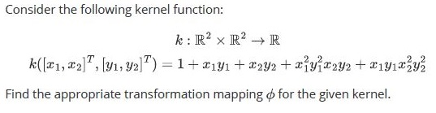
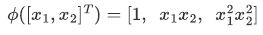
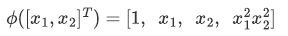
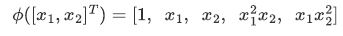
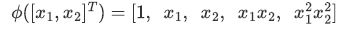
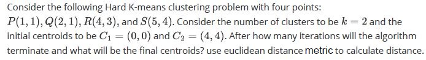
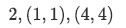
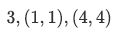
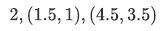
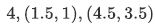
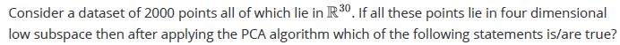
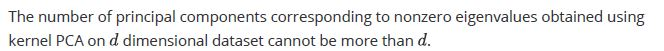
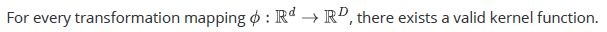
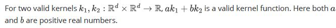
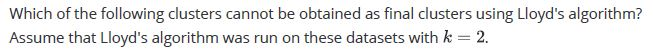
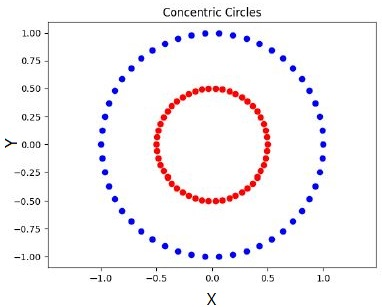
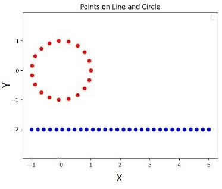
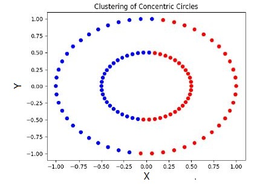
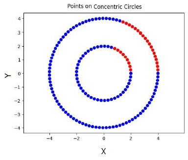
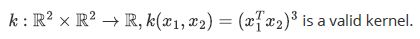
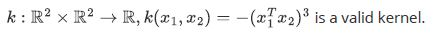
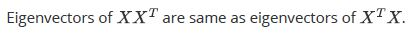
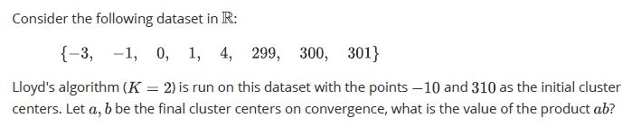
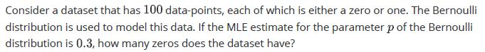
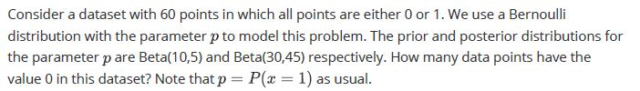
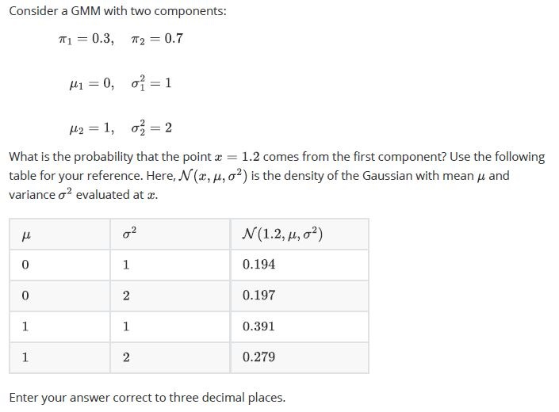
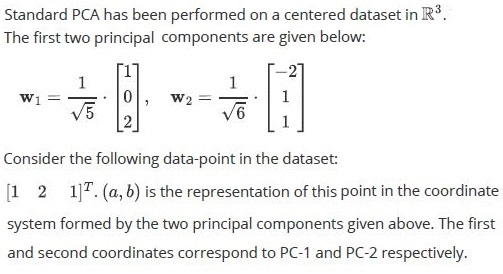
Auto-generated summary from the source site. Handy as a checklist; the lessons above explain each idea from scratch.
Kernel Function: A function that computes the dot product of the transformed input data in a higher-dimensional space.
Kernel PCA: Principal Component Analysis (PCA) applied in a higher-dimensional space using kernel functions.
Properties:
Algorithm: Iterative algorithm to partition data into clusters.
Steps:
Purpose: Reduces the dimensionality of a dataset while preserving as much variability as possible.
Steps:
Properties:
Purpose: Models data as a mixture of Gaussian distributions.
Components:
Bernoulli Distribution: Models binary data.
MLE: Estimates the parameter based on observed data.
Purpose: Used as a prior distribution for the parameter in a Bernoulli distribution.